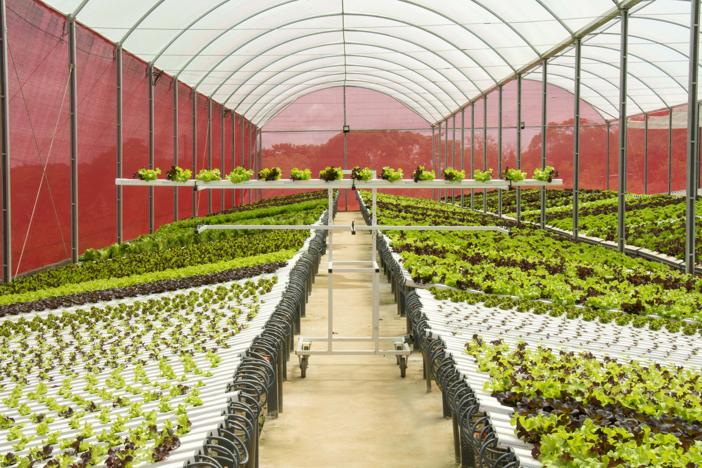
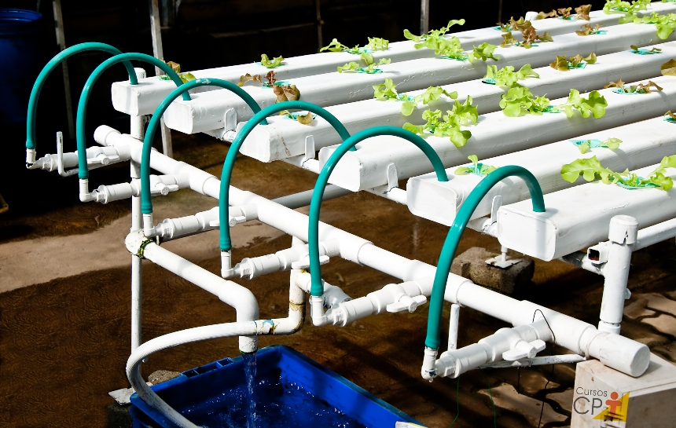
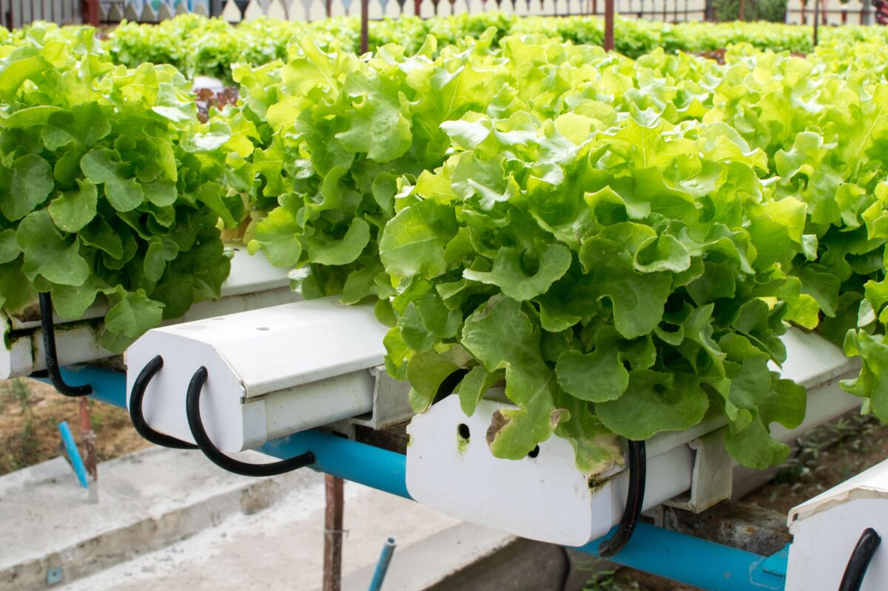

Hidroponia: Cultivando o Futuro da Agricultura Sustentável
A hidroponia é um método revolucionário de cultivo de plantas que
prescinde do solo tradicional, utilizando água enriquecida com
nutrientes como meio de crescimento. Essa técnica inovadora tem ganhado
destaque no mundo da agricultura devido aos seus benefícios ambientais,
eficiência no uso de recursos e capacidade de produção de alimentos em
ambientes variados.



Vantagens do uso da Hidroponia
-
Uso eficiente de água: Requer menos água em
comparação com a agricultura tradicional.
-
Crescimento acelerado: As plantas geralmente crescem
mais rápido em sistemas hidropônicos.
-
Controle de nutrientes: Nutrientes são fornecidos de
forma precisa, resultando em plantas saudáveis.
-
Produção o ano todo: Pode ser praticada
independentemente das estações.
-
Espaço otimizado: Adequada para áreas urbanas e com
pouco espaço.
-
Mínima exposição a pragas: Ambiente controlado reduz
a necessidade de pesticidas.
-
Colheitas mais limpas: Menos sujeira e terra tornam a
colheita mais fácil.
-
Produção local: Permite o cultivo de alimentos
próximos aos centros urbanos.
-
Sustentabilidade: Reduz o impacto ambiental em
comparação com a agricultura convencional.
-
Maior rendimento por planta: Maximiza a produção em
um espaço limitado.